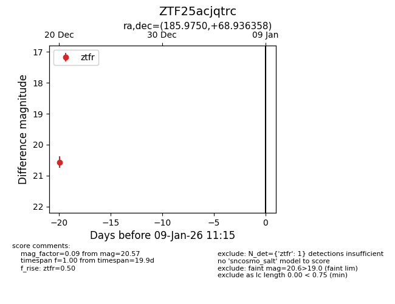
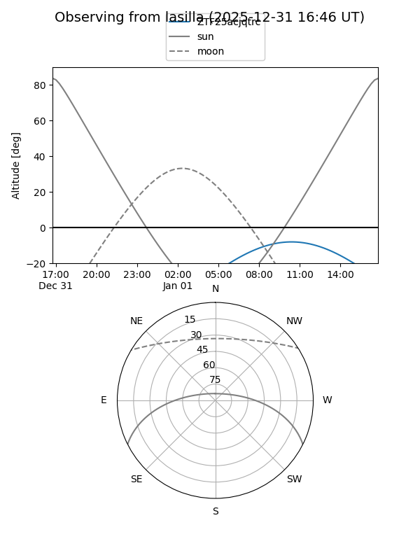
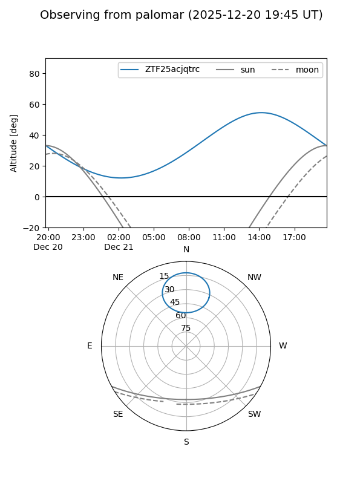

ZTF25acjqtrc
Target ZTF25acjqtrc at 2025-12-31 17:00
Aliases and brokers:
FINK:
Lasair:
ALeRCE:
alt names
ZTF25acjqtrc (ztf,fink_ztf)
Coordinates:
equatorial (ra, dec) = 185.9750,+68.93636
equatorial (HMS+DMS) = 12:23:54.00,+68:56:10.89
galactic (l, b) = (126.6230,+47.99406)
Flags:
Photometry:
last ztfr=20.57
1 ztfr detections
Lightcurve

Visibility


Additional plots